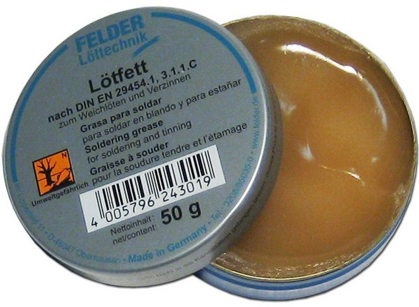
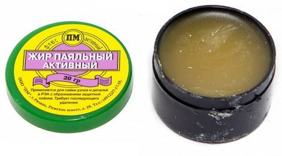
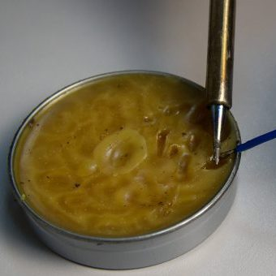

Паяльный жир
Паяльный жир – вещество, применяемое для улучшения процесса пайки, упрощения лужения и снятия оксидной пленки с различных металлических поверхностей. По своей консистенции напоминает обычное жировое вещество природного происхождения, однако отношения к нему никакого не имеет.
Паяльный жир может быть двух видов:
- простой по составу нейтральный;
- сложный активный.
Каждый из этих видов отличается друг от друга составом и своими свойствами.
Нейтральный жировой флюс
Нейтральный жир производится из смеси стеаринового вещества с канифолью. Именно эти составляющие компоненты позволяют ему растворять оксидную оболочку с места пайки, обеспечивать мягкое и легкое паяние в целом.
Применение нейтрального жира способствует улучшению текучести припойного компонента, что дает возможность ему проникнуть в любую щель и равномерно распределиться по обрабатываемой поверхности. Данное вещество хорошо растворяется в органических растворителях, так что убрать его из поверхности можно даже обычной водой.
Принцип действия этого флюса основан на образовании пленки, препятствующей окислительным процессам в металлах, после полного выгорания под воздействием высоких температур от жала паяльника. При нагревании переходит в жидкое состояние.
Предназначен он для применения в комбинации с легкоплавким припоем при пайке различных черных и цветных металлов, за исключением алюминия и его сплавов. Идеально подходит для припоя ПОС, которым спаивают медные детали при температуре меньше 300°C. Пайка микросхем и плат – рабочая зона этого вида паяльного жира.
Жир паяльный нейтральный имеет ряд достоинств:
- пайка с этим веществом обладает высокими качественными свойствами;
- упрощает процесс лужения;
- легкость в удалении остатков флюса;
- является нетокопроводящим веществом, но имеет маленькое сопротивление, из-за этого его следует убирать с рабочей поверхности;
- низкая стоимость;
- отсутствие активных веществ в составе препятствует коррозийным процессам и порчи деталей в местах спайки;
- правильное хранение не ограничивает срок годности.

Рис. 1 - Нейтральный паяльный жир
Однако этот флюс нейтрального состава имеет и некоторые недостатки:
- сложность при пайке ржавых деталей;
- твердый остаток, который необходимо после процесса спаивания убирать;
- существуют вещества – конкуренты паяльного жира, например, ЛТИ-120 или пастообразный флюс, которыми более удобно производить пайку.
Активный жировой флюс
Активный жир имеет более сложную химическую структуру, так как содержит активные химические соединения. В его состав входят следующие вещества:
- вода, прошедшая процедуру деионизации;
- вазелин;
- парафин;
- хлоридная соль аммония – NH4Cl;
- хлорид цинка – ZnCl2.

Рис. 2 - Активный паяльный жир
Важно! Так как активный паяльный жир содержит агрессивные вещества, то его не рекомендуется применять для деликатной пайки, например, электронных компонентов, так как возможен процесс разрушения мелких деталей в них.
Активный флюс такого состава отлично подходит для спаивания слишком окисленных металлов или тех сплавов, которые трудно поддаются пайке. После паяльного процесса следует удалять остатки этого вещества во избежание прогрессирования коррозийных процессов.
Внимание! Рабочее место должно быть хорошо проветриваемым или с организованным принудительным вентилированием, так как входящие в состав такого флюса вещества имеют высокую степень вредности при воздействии на них высоких температур.
Жир паяльный активный обладает нижеследующими положительными сторонами:
- обладает лучшими качественными свойствами при пайке элементов из черного или цветного металла – лучше прочих видов флюса, в том числе бура;
- легкость смывания остатков обычной водой или другими растворителями природного происхождения;
- возможность спаивать поверхности, которые имеют высокую степень окисления;
- приемлемая цена;
- долгий срок хранения.
Минусов у активного жира мало: вредность выделяемых при пайке веществ и способствование началу коррозии на месте спайки.
Как нейтральный, так и активный жир для пайки можно удалять из обработанной поверхности не только водой, но и специальным веществом для удаления различного рода флюса.
Паяльный жир собственного изготовления
Приготовление пассивного состава
Процесс изготовления пассивного жира очень простой. Для этого потребуется наличие стеаринового вещества, канифоли и выполнение следующих последовательных действий:
- Для начала необходимо расплавить канифоль под воздействием высокой температуры, предварительно поместив ее в какую-нибудь емкость;
- После этого добавить в нее стеарин и перемешать смесь до однородного состояния;
- Дать остыть полученному раствору.
Раствор может затвердеть или иметь недостаточную степень вязкости, в таких случаях следует опять его подогреть и добавить больше стеарина. Делать это потребуется до тех пор, пока консистенция не станет нормальной для паяльного жира.
Стеарин может быть заменен выделяемой из мыла стеариновой кислотой, однако это усложнит процесс изготовления нужного материала.
Приготовление активного состава
Процесс изготовления жира с активными компонентами немного сложнее. Процентное соотношения веществ, входящих в его состав, следующее:
- хлоридная соль цинка – 10%;
- масло вазелиновое – 10%;
- дистиллированная вода – 2%;
- паста ГОИ-54 (смазочное вещество) – 78%.
Чтобы изготовить такой материал, нужно действовать по нижеследующему алгоритму:
- В фарфоровую ступу налить воду, в которую добавить хлоридную соль цинка. Все тщательно растолочь (растереть);
- К полученной смеси добавить вазелиновый компонент и размешивать все до эмульсионного состояния;
- Далее необходимо порционно добавлять к полученной эмульсии пасту ГОИ. Все постоянно перемешивать до однородности;
- Активный жировой флюс готов к использованию.
Процесс пайки

Рис. 3 - Нанесение жира на проволоку
Использование при паянии жира не намного труднее, чем применение канифольного флюса. Весь процесс состоит из нижеследующих процедур:
- на место пайки требуется нанести нужное количество жира;
- далее разогреть это место пальником, растапливая жир и одновременно собирая образующиеся окислы;
- после того, как флюс полностью испарился, и сформировалась на его месте защитная пленка от окислительных процессов, следует нанести припой;
- совершить спайку деталей;
- удалить оставшийся жир с место пайки бензином «Калоша», водой, изопропанолом или специальным средством.